Found by Maurizio Morandi
in April 2009.
Found by Maurizio Morandi
in April 2009.
Found by Maurizio Morandi
in April 2009.
| 1. 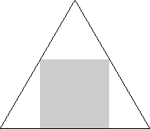 | 2. 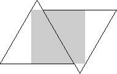 | 3. 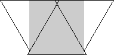 | ||
| s = 2√3 - 3= .464+ Trivial. | s = √3 - 1 = .732+ Found by David Cantrell in August 2002. | s = 4√3 - 6 = .928+ Found by David Cantrell in August 2002. |
| 4. 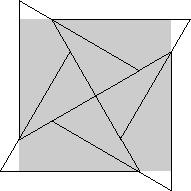 | 5. 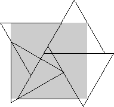 | 6. 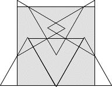 | ||
| s = (3√3 - 3) / 2 = 1.098+ Found by Erich Friedman in August 2002. | s = (15√3 - 21) / 4 = 1.245+ Found by David Cantrell in July 2005. | s = (107√3 - 85) / 71 = 1.413+ Found by Maurizio Morandi in April 2009. |
| 7. 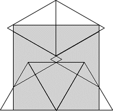 | 8.
| 9. 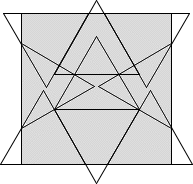 | ||
| s = (7√3 - 6) / 4 = 1.531+ Found by Maurizio Morandi in April 2009. | s = (12 - 5√3) / 2 = 1.669+ Found by Maurizio Morandi in April 2009. | s = (139 - 69√3) / 11 = 1.771+ Found by Maurizio Morandi in April 2009. |
| 10. 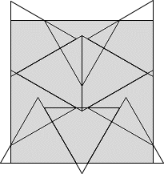 | 11. 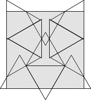 | 12. 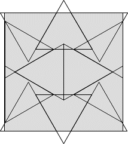 | ||
| s = 5 / √3 - 1 = 1.886+ Found by Maurizio Morandi in April 2009. | s = √3 + 1/4 = 1.982+ Found by Maurizio Morandi in April 2009. | s = (7√3 + 15) / 13 = 2.086+ Found by Maurizio Morandi in April 2009. |